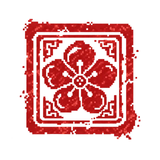

성종의
인재 선발소
훈구인가, 사림인가.
서류를 읽고 도장을 찍어라.
성종의 어명심사관의 이름을 기록하시오

학번 4자리와 이름을 띄어 써 주세요. 예) 3130 홍길동
일반모드 · 20명 · 제한시간 5분 · 명예의 전당 기록
심사번호자동 생성
누적 심사 유형0 / 70
중단된 심사 기록이 있습니다.기록 미반영 상태로 이어서 할 수 있습니다.
명예의 전당
연결 확인 중
전체 학생 최고 기록 TOP 20 · 학생별 최고점 1개
명예의 전당을 불러오는 중...